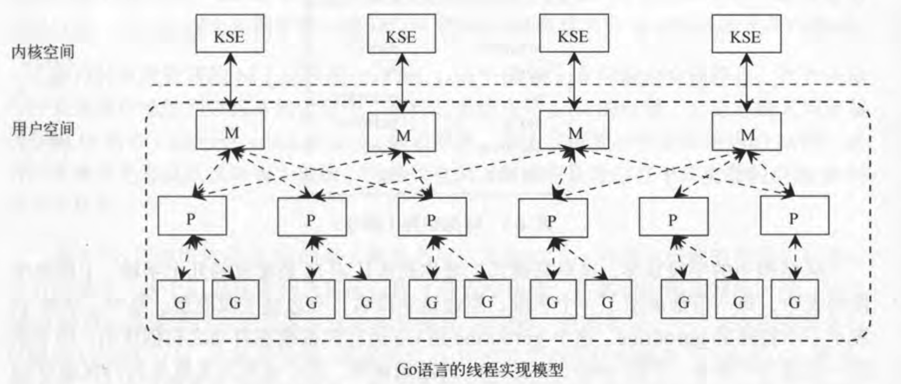

Goroutine 并发模型
并发基础
在学习 Goroutine 之前，如果对于 Linux 基本的并发模型不了解，那么可能会学的一头雾水，所以一切的一切之前，从 Linux 基本的并发知识说起，复习一下。
并发与并行
- 并发（Concurrency）：指宏观上看起来两个程序在同时运行，比如说在单核cpu上的多任务。但是从微观上看两个程序的指令是交织着运行的，你的指令之间穿插着我的指令，我的指令之间穿插着你的，在单个周期内只运行了一个指令。这种并发并不能提高计算机的性能，只能提高效率；
- 并行（Parallelism）：提到并行时往往涉及到的概念就是分布式/多核/多机这种概念，即一定是指严格物理意义上的同时运行，比如多核cpu，两个程序分别运行在两个核上，两者之间互不影响，单个周期内每个程序都运行了自己的指令，也就是运行了两条指令。这样说来并行的确提高了计算机的效率。所以现在的cpu都是往多核方面发展。
进程与线程
-
定位：进程是资源分配的最小单位，线程是CPU调度的最小单位；
-
线程依赖于进程而存在，一个线程只能属于一个进程，而一个进程可以有多个线程，但至少有一个线程；
-
进程在执行过程中拥有独立的内存单元，而多个线程共享进程的内存资源；
-
创建和撤销开销： 进程的创建和撤销操作开销远大于线程创建和撤销的开销（系统都要为进程分配或回收资源，如内存空间等）；
-
切换开销：进程切换时，涉及到整个当前进程 CPU 环境的保存以及新被调度运行的进程的 CPU 环境的设置。而线程切换只须保存和设置少量寄存器的内容，并不涉及存储器管理方面的操作。即，进程切换的开销也远大于线程切换的开销；
-
通信：由于同一进程中的多个线程具有相同的地址空间，使它们之间的同步和通信的实现比较容易。进程间通信则是通过诸如管道、共享内存、信号、信号量、Socket、消息队列等实现；
-
进程编程调试简单可靠性高，但是创建销毁开销大；线程正相反，开销小，切换速度快，但是编程调试相对复杂；
-
进程间不会相互影响 ；线程一个线程挂掉将导致整个进程挂掉；
-
进程适应于多核、多机分布；线程适用于多核；
系统调用 & 用户态内核态 & 进程切换/调度
用户进程生存在用户空间中，无法直接操纵计算机的硬件，但是内核空间中的内核是可以做到的，因此内核会暴露出一些接口供用户进程使用，用户进程通过这些接口去使用内核的功能，进而操控计算机的硬件，这个用户空间与内核空间之间的桥梁，就叫做“系统调用(System call)”，与普通程序函数不同的是，内核调用会导致内核空间的数据存取和指令的执行，而普通函数只在用户空间中起作用，如果普通函数需要对内核空间进行访问，也是借助于系统调用相关函数实现的。
然后说，用户态和内核态，这是为了保证操作系统安全而建立的一个特性，大部分时间里 CPU 处于用户态，此时 CPU 只能对用户空间进行访问，用户态下的用户进程是不允许访问内核空间的，当用户进程发出系统调用的时候，内核会把 CPU 从用户态切换到内核态，然后执行相关的内核函数，执行完毕后切换回用户态，并把执行结果返回给用户。
最后说到进程，为了实现一开始说的操作系统并发特性，Linux 操作系统可以凭借 CPU 的强大性能在多个进程之间快速切换，这个过程从专业上讲我们称为进程间的上下文切换，通过这种快速的切换，营造了多个进程同时运行的假象，而每个进程也地以为自己独占 CPU，但是我们要知道的是，同一时刻正在运行的进程仅会有一个。最重要的是，进程的切换是需要付出代价的，就像一开始提到的，进程切换时，涉及到整个当前进程 CPU 环境的保存以及新被调度运行的进程的 CPU 环境的设置，即进程切换的开销是比较大的。此外，除了进程切换，为了使每个生存的进程都有运行的机会，内核还要考虑下次切换时运行哪个进程，何时进行切换，被换下的进程何时重新换上，这些类似的问题称为进程调度。
上述是程序并发的基础，后面的所有实现都离不开前面这些最基本的底层实现。
线程模型
线程的实现模型主要有3个，用户级线程模型、内核级线程模型、两级线程模型；三者之间最大的差异在于线程与内核调度实体（Kernel Scheduling Enitity，KSE）之间的对应关系上，KSE 即内核级线程，也就是内核调度的最基本单位：
- 用户级线程模型：用户级线程与 KSE 的对应关系为 M:1，即全部用户线程都映射到一个OS线程上，上下文切换成本最低，但是线程库对线程的调度完全不受内核控制，无法利用多核资源，这种模型存在严重的缺陷，因此现代 OS 都不采用这种线程模型；
- 内核级线程模型：即进程中每个线程与 KSE 1:1 对应，该模型下的线程由内核负责管理，应用程序对于线程的管理都通过内核提供的系统调用来完成；一对一线程避开了多对一线程的很多弊端，可以真正实现线程的并发运行，但是同时内核级线程模型给内核调度器造成了很大的负担，尤其是当一个进程创建了非常多的线程的时候。尽管如此，还是相比用户级线程有较大优势的，包括 Linux 在内的很多现代操作系统都是以内核级线程模型实现线程的；
- 两级线程模型：线程与 KSE 对应关系 M:N，显然两级线程模型是在之前两种模型基础上进行优化的，这种模型下，一个进程对应多个 KSE，而应用程序线程与 KSE 并不是一一对应关系。通俗来讲，两级线程模型下，线程库通过 OS 内核创建多个内核级线程，然后通过这些内核级线程对应用程序线程进行调度，应用程序线程与内核级线程动态关联。
两级线程模型下内核资源消耗大大减少，但是缺点是，模型实现比较复杂，所以并没有在操作系统上采用。但是 Go 语言的并发模型就与两级线程模型非常类似，只不过在 Go 中，这种不受操作系统内核管理的独立控制流不叫应用程序线程，而称为 Goroutine
Goroutine
为什么 Go Scheduler 需要实现 M:N 的方案？
**线程创建开销大。**对于内核级线程而言，其很多特性均是操作系统给予的，但对于 Go 程序而言，其中很多特性可能非必要的。这样一来，如果是 1:1 的方案，那么每次 go func(){...}都需要创建一个 OS 线程，而在创建线程过程中，内核级线程里某些 Go 用不上的特性会转化为不必要的性能开销，不经济。
**减少 Go 垃圾回收的复杂度。**依据1:1方案，Go 产生所用用户级线程均交由 OS 直接调度。 Go 的垃圾回收器要求在运行时需要停止所有线程，才能使得内存达到稳定一致的状态，而 OS 不可能清楚这些，垃圾回收器也不能控制 OS 去阻塞线程。
因此 Go Scheduler 的 M:N 方案出现，就是为了解决上面的问题。
Go Scheduler
Go Scheduler 主要涉及的三个元素：
-
M: Machine，Go runtime 将一个 M 紧密对应于一个 KSE，即内核调度实体；
-
P: Processor， 逻辑处理器，通常表示执行上下文，用于匹配 M 和 G 。P 的数量不能超过 GOMAXPROCS 配置数量，这个参数的默认值为CPU核心数；通常一个 P 可以与多个 M 对应，但同一时刻，这个 P 只能和其中一个 M 发生绑定关系；M 被创建之后需要自行在 P 的 free list 中找到 P 进行绑定，没有绑定 P 的 M，会进入阻塞态。GOMAXPROCS 参数很重要，其决定了 P 的最大数量，也决定了自旋 M 的最大数量。
-
G: Goroutine，Go 的用户级线程，常说的协程的概念，真正携带代码执行逻辑的部分；
线程自旋（Spinning Threads）
线程自旋的核心是避免线程陷入阻塞，简单点说就是“忙等待”，通俗点说就是“死循环”，再通俗点就是“CPU 空转”，缺点很明显，一定程度上是浪费资源的，但是好处也很明显，避免线程阻塞就可以避免线程上下文切换，因此哪怕浪费一些资源，但是可以保证效率与性能，M 自旋就是循环执行一个指定的调度逻辑，就是不停地寻找 G。当然前面也提到过，为了避免过多浪费 CPU 资源，自旋的线程数不会超过 GOMAXPROCS ，这是因为一个 P 在同一个时刻只能绑定一个 M，P 的数量不会超过 GOMAXPROCS，因此可绑定的 M 也不会超过这个数。

G0 概念: 本质也是 G ，也需要跟具体的 M 结合才能被执行，只不过他比较特殊，其本身就是一个 schedule 函数，这个函数涉及到几个概念：
-
本地运行队列（Local Runable Queue）： 本地是相对 P 而言的本地，每个 P 维护一个本地队列；与 P 绑定的 M 中如若生成新的 G，一般情况下会放到 P 的本地队列；当本地队列满了的时候，才会截取本地队列中 “一半” 的元素放入全局运行队列中；
-
**全局运行队列（Global Runable Queue）：**承载本地队列“溢出”的 G。为了保证调度公平性，schedule 过程中有 1/61 的几率优先检查全局队列，否则本地队列一直满载的情况下，全局队列中的 G 将永远无法被调度到；
-
任务窃取（Stealing）： 目的很简单，就是为了使得空闲（idle）的 M 有活干，别闲着，提高计算资源的利用率。但是窃取也是有章法的，规则是随机从其他 P 的本地队列里窃取 “一半” 的 G。
总结一下 Go scheduler 的调度流程就是：
-
1/61 的几率在全局队列中找 G，60/61 的几率在本地队列找 G；
-
如果全局队列找不到 G，从 P 的本地队列找 G；
-
如果找不到，从其他 P 的本地队列中窃取 G；
-
如果找不到，则从全局队列中拿取一部分 G 到本地队列。
-
如果找不到，从网络中 poll G。
-
只要找到了 G， 就会立马丢给 M 执行。
当然上述任何执行逻辑如果没有 running 的 M 参与，都是无法真正被执行的，这包括调度逻辑本身。
总结： Go scheduler 调度的本质就是 P 将 G 合理的分配给某个 M 的过程。